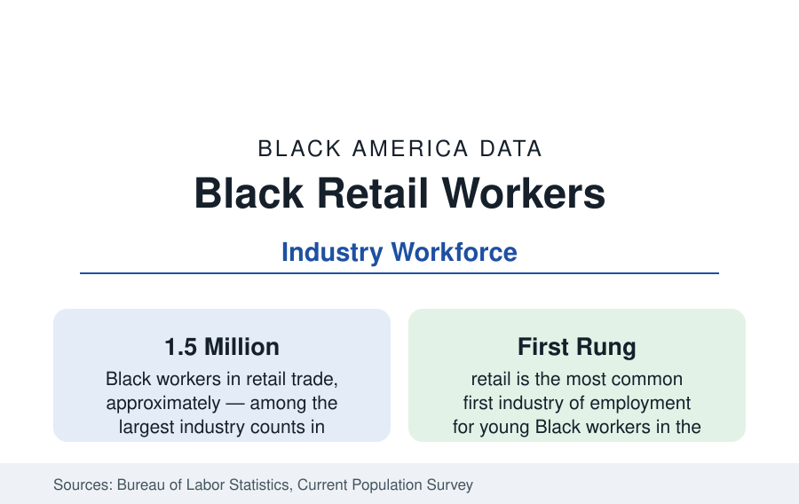

Black Employment
Black Workers in Retail: The Largest Sales Floor in the Data
Retail trade employs roughly a million and a half Black workers — in the economy's most accessible jobs and its most contested scheduling and wage data.

Retail trade employs roughly a million and a half Black workers — about a ninth to an eighth of the industry's workforce — across the big-box stores, grocers, pharmacies, apparel chains, and convenience formats that form the most visible employment landscape in Black America's neighborhoods. Retail is the economy's most accessible employer and its most contested low-wage file: the scheduling, wage-floor, and automation data of the modern labor debate run through its aisles. This article reports the retail workforce data.
The Segments: Grocery, General Merchandise, and the Rest
Black retail employment concentrates in the food and general-merchandise segments: grocery stores (where Black workers form a substantial share of the workforce and several chains carry long union traditions in the big cities), warehouse clubs and supercenters (the Walmart economy — the nation's largest private employer employs Black workers in the hundreds of thousands, the largest single-company Black workforce in the data), pharmacies, building-supply and home centers, and apparel. The geography follows Black population with the retail map's own distortion: stores locate by purchasing power, so the 'retail desert' data of the neighborhood literature (fewer full-service grocers and pharmacies per capita in majority-Black areas, a surplus of dollar stores and convenience formats) shape both the shopping data and the job data — the dollar-store segment, whose workforce is disproportionately Black in the South's small towns, is the format whose growth the trade data record fastest in Black communities.
Wages, Hours, and the Scheduling File
Retail's compensation data are the low-wage economy's core file. Median hourly earnings for Black retail workers run at or below the industry's overall median — itself in the teens of dollars — with the part-time share the defining variable: roughly a third of retail workers are part-time, and the scheduling research (the Shift Project's large-scale surveys of service workers) documents the instability regime — schedules posted days in advance, on-call and cancelled shifts, hours volatility — falling hardest on the workers with the least seniority, disproportionately Black and Latina women in the survey cross-tabs. The wage-floor era's data are correspondingly central: the state and city minimum-wage increases of the past decade covered retail more completely than any other industry, and the industry's own giants' internal minimums (the $15-plus floors the big chains adopted under market and public pressure) moved the Black retail median more directly than any program in the employment data.
The Ladder and Its Ceiling
Retail's management ladder is the industry's stated promise — the store manager's office is genuinely reachable from the sales floor without a degree, and Black managers run a substantial share of the stores in Black neighborhoods across the chains — and its ceiling is in the same data: district, regional, and corporate roles thin out in the pattern of the occupation profile, and the buying and merchandising functions (where the industry's margins and glamour sit) record Black shares in the low single digits in the trade surveys. The franchise and ownership exit (the business section's restaurant and beauty profiles begin for many owners as retail wages saved) is the ladder's unofficial top rung in the community data.
Automation and the Format Shift
Retail's transformation is the employment data's largest current experiment: e-commerce has shifted the sector's jobs from the sales floor to the fulfillment center (the transportation profile's warehouses — the same workers, a different industry code, often in the same suburbs), self-checkout compresses the cashier occupation (historically a large Black female workforce) in the projections, and the store-count data record the hollowing of the mall and department-store formats that anchored a generation of Black retail employment in the metros. The BLS projections have cashier employment among the largest declining occupations of the decade — an automation exposure concentrated, like the driver exposure, in a workforce this section profiles repeatedly.
Reading the Retail Data
Retail is the employment of first resort and last visibility: a million and a half Black workers, the median teenager's first job and the median neighborhood's largest employer, paid at the economy's contested floor and scheduled at its contested edge. Its data are the low-wage economy's most honest mirror — which is why every wage and scheduling fight in the country is, in substantial part, a fight about the workers in this profile.
More in Black Employment
The Black Unemployment Rate: The Two-to-One Pattern
Black unemployment runs at roughly twice the White rate — 5.5 percent against 3.3 percent in annual averages — a ratio stable across five decades of federal data. How it is measured and why it persists.
Black Median Weekly Earnings: The 80-Cent Ratio
Black full-time workers earn a median of about $900 a week — roughly 80 cents for every dollar White workers earn. The BLS earnings data by group, gender, and occupation.
Black Labor Force Participation: Working at National Rates
Black labor force participation runs at roughly the national rate — and Black women participate at higher rates than White women. The BLS participation data.
Source: U.S. Bureau of Labor Statistics, Current Population Survey and industry data; National Retail Federation; Economic Policy Institute scheduling research.